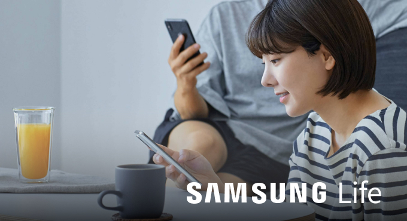

그룹원 채용공고


2024.7.10 ~ 7.23
[삼성물산 건설부문] 프론트앤드개발자 채용
2024.7.15 ~ 7.30
[삼성물산 패션부문] 프로덕트 디자이너 채용
2024.7.15 ~ 7.27
[삼성물산 리조트부문] 웹퍼블리셔 채용
삶의 가치를 높이는 SAMSUNG C & T 기술
혁신
Building the World with Innovation지속
Sustainable Construction with Samsung C&T가치
Creating Value through Innovationn첨단
Smart Cities Built with Advanced Technology지속 가능한 내일을 만드는 삼성물산
삼성물산 리조트부문(사장 정해린)이 여름 휴가철을 맞아 워터파크 ‘캐리비안 베이’와 테마파크 ‘에버랜드’를 하루에 모두 즐길 수 있는 1+1 특별 이벤트를 진행하고 있다. 내달 25일까지 진행되는 1+1 특별 이벤트를 통해 캐리비안 베이 종일권을 구매한 고객들은 오후 1시부터 에버랜드를 무료로 이용할 수 있다. 에버랜드 무료 이용은 캐리비안 베이 이용 당일만 가능하고, 캐리비안 베이 오후권을 구입한 고객들도 오후 5시부터 에버랜드를 무료 이용할 수 있다. 현재 여름축제 ‘메가 웨이브 페스티벌’이 펼쳐지고 있는 캐리비안 베이에서는 시원한 물놀이와 함께 힙한 분위기의 초대형 시그니처 조형물 힙세이돈, 매일 저녁 파도풀 특설 무대에서 열리는 디제이 풀파티 등 다양한 콘텐츠를 신나게 즐길 수 있다. 특히 디제이 풀파티 ‘클럽 캐비’에서는 인기 아이돌부터 힙합 아티스트까지 스페셜 무대가 매주 주말 펼쳐지는데, 오는 20일 가수 비오의 특별 공연에 이어 걸밴드 아이돌 그룹 큐더블유이알(QWER, 7월 28일), 다이나믹 듀오(8월 3일) 등 핫한 공연 라인업이 이어질 예정이다. 오는 26일부터는 몸짱을 뽐내며 신체능력을 테스트해 볼 수 있는 ‘피지컬 캐비’ 이벤트가 넥센타이어와 함께 3주간 매주 금토일에 열린다. 밸런스 보드, 철봉, 타이어 플립 등 3단계 피지컬 미션에 도전하고 기념 굿즈를 선물 받을 수 있으며, 기록 경쟁을 통해 순금 10돈 금메달에 도전할 수 있는 ‘피지컬 캐비 챌린지’도 이벤트 당일 매일 선착순으로 진행된다. 또한 캐리비안 베이 하버마스터 레스토랑에서는 학센, 폭립 등 불향 가득한 바비큐와 시원한 크러시 생맥주를 즐길 수 있는 ‘메가 바비큐 페스티벌'(Mega BBQ & BEER Festival)이 8월 15일까지 펼쳐지고 있다. 축제 기간 중 주말에는 크러시 맥주 구매자를 대상으로 물대포 게임 이벤트도 진행돼 피서객에게 즐거운 경험을 제공할 예정이다.
삼성물산 건설부문 오는 10월, 인천시 연수구에 ‘래미안 송도역 센트리폴’을 분양한다고 밝혔다. 이 단지는 송도역세권구역 도시개발사업지에 위치해 있으며, 최고 40층 높이 아파트 19개동, 2549세대 규모의 대단지로 조성될 예정이다. 블록별 세대수는 1블록 706세대(전용면적 59~84㎡), 2블록 819세대(전용면적 59~95㎡), 3블록 1,024세대(전용면적 59~101㎡)이다. ‘래미안 송도역 센트리폴’은 인천발 KTX와 월곶판교선 신설 등 교통 호재로 미래가치가 기대되는 송도역세권구역 도시개발사업지 내 첫 번째 공급 단지이다. 특히 삼성물산이 시행부터 시공까지 맡아서 하는 자체 개발 사업으로, 외관부터 세대 내부∙스마트 시스템∙조경에 이르기까지 래미안만의 차별화된 특화 설계를 적용했다. 현재 수인분당선을 이용할 수 있는 송도역에는 2025년 인천에서 부산, 인천에서 목포를 잇는 인천발 KTX가 개통될 예정이며, 여기에 판교까지 환승 없이 이동할 수 있는 월곶판교선도 2027년 개통이 예정돼 있어 이 일대가 인천시의 새로운 교통 중심지로 거듭날 전망이다. 신도시급 주거 인프라도 눈길을 끈다. 부지 내 위치한 상업용지는 송도역과 연계돼 신흥 상권을 형성할 것으로 전망되며, 인천뮤지엄파크∙ 그랜드파크∙쇼핑시설∙업무복합시설 등 조성이 예정된 용현·학익 1블록 도시개발사업과도 바로 맞닿아 있어 생활권 시너지 효과도 기대된다. 도시개발사업 구역 내 초등학교 또한 신설될 예정이다. 도보권 내에 옥련여자고등학교가 위치해있으며, 지역 내 명문학군으로 꼽히는 송도고등학교도 인접해 있어 교육 환경 또한 우수하다. 인천의 새로운 중심으로 거듭날 송도역세권구역에 조성되는 이 단지는 이러한 다양한 편의시설을 가깝게 누리는 입지 여건을 갖춰, 단지명도 중심을 뜻하는 ‘센트럴(Central)’과 랜드마크를 의미하는 ‘폴(Pole, 기둥)’을 결합한 ‘센트리폴’로 명명했다. ‘래미안 송도역 센트리폴’ 분양 관계자는 “송도권역을 넘어 인천의 새로운 교통 중심지로 거듭날 송도역세권구역 도시개발사업의 첫 프로젝트라는 점에서 수요자들의 관심이 뜨겁다”며 “래미안 브랜드만의 우수한 상품성과 특화 설계를 적용해 인천시 랜드마크로 자리매김할 수 있도록 최선의 노력을 기울일 계획이다”라고 전했다. ‘래미안 송도역 센트리폴’의 견본주택은 인천 연수구 옥련동 송도역 인근에 마련될 예정이며, 관련 정보는 래미안 홈페이지에서도 확인할 수 있다.
패션시장에서 신명품의 인기가 여전한 가운데 올 상반기 SSF샵의 매출을 견인한 브랜드는 ‘아.메.르(아미/메종키츠네/르메르)’였다. 삼성물산 패션부문의 패션/라이프스타일 전문몰 SSF샵(www.ssfshop.com)은 올 상반기를 빛낸 ‘베스트 10’ 아이템을 공개했다고 15일 밝혔다. SSF샵의 올 상반기 가장 많은 매출을 올린 아이템으로, ‘하트 로고’로 전세계 패피들의 사랑을 받고 있는 아미의 폴로 셔츠가 선정됐다. 면 소재를 활용해 착용감이 좋고, 베이직한 디자인으로 활용도가 높다. 티셔츠 하나만으로 10억원에 가까운 매출을 올렸다. 2, 3위에는 사랑스러운 ‘여우 로고’로 인기를 끌고 있는 메종키츠네의 아이템들이 꼽혔다. 폭스 헤드 자수 패치로 매력적인 포인트를 준 클래식한 디자인의 여성 반소매 티셔츠가 2위를 차지했고, 군더더기 없는 깔끔한 핏과 기본 디자인이 돋보이는 남성 폭스 헤드 폴로가 3위에 랭크됐다. 두 아이템 모두 단독으로 착용하거나 카디건, 재킷 등 다양한 아우터의 이너로 활용할 수 있고, 어떤 하의와도 손쉽게 매칭이 가능하다. 크로와상백으로 유명한 르메르는 올드머니룩 트렌드가 이어지는 가운데 새롭게 선보인 스몰 소프트 게임백을 앞세워 5위를 거머줬다. 매트한 나일론 소재가 돋보이는 가방으로, 스티치 디테일을 더해 착용하는 스타일에 따라 다양한 형태를 띤다. 성별에 관계없이 활용 가능하고, 다양한 무드로 즐길 수 있다. 특히 한국을 대표하는 클래식 브랜드 빈폴이 4위에 이름을 올려, 국내 브랜드의 위상을 높였다. 최고급 원사인 수피마 면으로 제작해 착용감이 좋은 반소매 피케 티셔츠가 인기를 끌었다. 여러 번 세탁 후에도 형태가 오래 유지되는 우수한 품질이 특징이다. 코디하기 손쉬운 기본 아이템에 다양한 컬러와 사이즈를 구성해 선택의 폭을 넓혔다. 남녀 공용 상품으로 출시해 커플룩으로도 활용할 수 있다. 또 컬처 블렌딩 유니언 비이커(BEAKER)에서 운영하는 단톤의 반소매 포켓 티셔츠가 6위를 차지했다. 가볍지만 견고한 7온스의 면 소재를 사용했고, 불균일한 소재의 질감으로 고유의 매력을 드러낸다. 모든 솔기를 커버 스티치로 마감했고, 목과 어깨 라인은 테이핑 처리해 내구성이 좋다. 넉넉한 박스 실루엣으로, 왼쪽 상단의 포켓 디테일과 단톤 브랜드 로고 장식이 포인트다. 7위에 아우터 맛집 브랜드 구호플러스의 시그니처 세미 오버핏 재킷이 꼽혔다. 정교한 테일러링과 뒷면의 트임과 히든 버튼 디테일이 매력적이다. 브랜드 시그니처 블루 자수로 포인트를 더했다. 세련된 트윌 조직이 돋보이는 울 혼방 소재를 사용해 고급스럽다. 포멀부터 캐주얼룩까지, 다양한 스타일링이 가능하다. 또한 디자이너 브랜드 제너럴 아이디어의 베이직 카디건과 아식스 젤 키야노 14는 각 브랜드의 베스트셀러로, SSF샵에서 제공한 단독 프로모션 혜택에 힘입어 각각 8위와 9위에 랭크됐다. 넉넉한 수납은 물론 무게가 가벼워 실용적인 루에브르의 삭 드 플로(Sac de Flot) 라지백도 베스트 10 아이템에 포함됐다. SSF샵은 지난달에 10일간 진행한 상반기 최대 규모의 ‘스페셜 쇼핑 위크’를 통해 신규 가입자는 전년 동기간 대비 60% 이상, 일 평균 방문자는 50% 이상 유치했다. 거래액과 첫 구매 고객의 비중이 20% 이상 늘었다. 이벤트 기간 중 최대 일 방문자 수가 100만명 이상을 돌파하는 기염을 토했다. 김동운 온라인영업사업부장(상무)은 “올 상반기 SSF샵을 빛낸 브랜드를 살펴보니, 여전히 시장에서는 신명품에 대한 관여도가 높게 나타나고, ‘아.메.르’에 대한 브랜드 소유욕이 지속되고 있다고 판단된다” 라며, “SSF샵은 젊은 층이 기대하고 원하는 브랜드를 지속 발굴, 운영하는 한편 실용 소비를 추구하는 소비심리를 감안해 브랜드위크/핫딜페스타/스페셜쇼핑위크 등 차별화된 프로모션을 지속적으로 기획해 나갈 것” 이라고 말했다.
삼성물산 상사부문(이하 삼성물산)은 ▲ 이용자 편의성을 제고하고 ▲ 콘텐츠를 보다 효과적으로 제공하기 위해 회사 공식 홈페이지(trading.samsungcnt.com)를 전면 개편했다. 새롭게 선보인 홈페이지는 방문자의 사용 기기 종류에 따라 화면 구성이 바뀌는 “반응형” 방식으로 제작됐다. 홈페이지 방문자는 PC나 모바일, 태블릿 등 다양한 디바이스에 최적화된 화면으로 홈페이지를 이용할 수 있게 됐다. 회사와 사업을 소개하는 정보 콘텐츠는 스토리텔링형 구성과 다채로운 영상, 모션 효과를 활용해 이용자의 집중도를 향상시켰고, 관련 콘텐츠를 PDF 파일로도 다운로드할 수 있도록 하여 활용도를 높였다. 기존 고객문의 페이지와는 별도로, 방문자가 회사 담당자들에게 바로 문의할 수 있는 “문의하기” 버튼도 “비즈니스”와 “글로벌네트워크” 메뉴에 추가로 배치해 이용자 편의성을 제고했다. 또한 뉴스 및 SNS 콘텐츠를 “미디어센터” 메뉴뿐만 아니라 메인 화면과 “비즈니스” 메뉴에 함께 배치해 이용자가 보다 다양한 소식을 손쉽게 접할 수 있도록 접근성도 강화했다. 삼성물산은 향후에도 ‘필수 산업재 트레이딩, 친환경 사업개발을 통해 사회에 기여한다’는 지향점을 기반으로 다양한 콘텐츠를 지속적으로 업데이트하여 회사에 대한 이해도를 제고해 나갈 방침이다.
삼성물산 건설부문 오는 10월, 인천시 연수구에 ‘래미안 송도역 센트리폴’을 분양한다고 밝혔다. 이 단지는 송도역세권구역 도시개발사업지에 위치해 있으며, 최고 40층 높이 아파트 19개동, 2549세대 규모의 대단지로 조성될 예정이다. 블록별 세대수는 1블록 706세대(전용면적 59~84㎡), 2블록 819세대(전용면적 59~95㎡), 3블록 1,024세대(전용면적 59~101㎡)이다. ‘래미안 송도역 센트리폴’은 인천발 KTX와 월곶판교선 신설 등 교통 호재로 미래가치가 기대되는 송도역세권구역 도시개발사업지 내 첫 번째 공급 단지이다. 특히 삼성물산이 시행부터 시공까지 맡아서 하는 자체 개발 사업으로, 외관부터 세대 내부∙스마트 시스템∙조경에 이르기까지 래미안만의 차별화된 특화 설계를 적용했다. 현재 수인분당선을 이용할 수 있는 송도역에는 2025년 인천에서 부산, 인천에서 목포를 잇는 인천발 KTX가 개통될 예정이며, 여기에 판교까지 환승 없이 이동할 수 있는 월곶판교선도 2027년 개통이 예정돼 있어 이 일대가 인천시의 새로운 교통 중심지로 거듭날 전망이다. 신도시급 주거 인프라도 눈길을 끈다. 부지 내 위치한 상업용지는 송도역과 연계돼 신흥 상권을 형성할 것으로 전망되며, 인천뮤지엄파크∙ 그랜드파크∙쇼핑시설∙업무복합시설 등 조성이 예정된 용현·학익 1블록 도시개발사업과도 바로 맞닿아 있어 생활권 시너지 효과도 기대된다. 도시개발사업 구역 내 초등학교 또한 신설될 예정이다. 도보권 내에 옥련여자고등학교가 위치해있으며, 지역 내 명문학군으로 꼽히는 송도고등학교도 인접해 있어 교육 환경 또한 우수하다. 인천의 새로운 중심으로 거듭날 송도역세권구역에 조성되는 이 단지는 이러한 다양한 편의시설을 가깝게 누리는 입지 여건을 갖춰, 단지명도 중심을 뜻하는 ‘센트럴(Central)’과 랜드마크를 의미하는 ‘폴(Pole, 기둥)’을 결합한 ‘센트리폴’로 명명했다. ‘래미안 송도역 센트리폴’ 분양 관계자는 “송도권역을 넘어 인천의 새로운 교통 중심지로 거듭날 송도역세권구역 도시개발사업의 첫 프로젝트라는 점에서 수요자들의 관심이 뜨겁다”며 “래미안 브랜드만의 우수한 상품성과 특화 설계를 적용해 인천시 랜드마크로 자리매김할 수 있도록 최선의 노력을 기울일 계획이다”라고 전했다. ‘래미안 송도역 센트리폴’의 견본주택은 인천 연수구 옥련동 송도역 인근에 마련될 예정이며, 관련 정보는 래미안 홈페이지에서도 확인할 수 있다.
새롭게 선보인 이번 영상에서는 세계 곳곳에서 이뤄졌던 삼성물산 건설부문의 도전의 발자취를 더듬어보고 지속가능하면서도 더 나은 미래를 창조하기 위한 노력을 확인할 수 있다. 총 5분 30초 분량의 영상은 상품별 대표 프로젝트를 현장음과 함께 보여주는 도입부(Intro)를 시작으로 삼성물산 건설부문이 걸어온 도전의 역사(History), 상품별 주요 프로젝트와 건설부문이 구상하는 미래 비전을 보여주는 ‘사업소개’, 그리고 인트로와 연결되는 구조를 이루며 주요 프로젝트 전경과 CG(컴퓨터그래픽)를 활용한 ‘아웃트로(Outro)’로 구성됐다. 무엇보다 ‘Creating FutureScape’라는 부문 비전에 걸맞는 유·무형의 솔루션을 보여줌으로써 삼성물산 건설부문이 가까운 미래에 선보일 비즈니스를 만나볼 수 있다. 이번 홍보영상은 영상미를 강조하면서도 과하지 않고 절제된 편집과 함께 주요 정보를 간결하게 전달함으로써 몰입감을 높이면서도 쉽게 이해할 수 있도록 제작된 점이 특징이다. 새로운 홍보영상은 4개 언어(한국어, 영어, 아랍어, 스페인어)로 제작됐으며, 삼성물산 건설부문의 각종 행사와 온라인 및 소셜네트워크 서비스(SNS)에서 다양하게 활용될 예정이다. 이번 영상은 삼성물산 건설부문 유튜브(삼물가게, https://www.youtube.com/@Samsungcnt)를 통해 확인할 수 있다.
삼성물산 건설부문(이하 삼성물산)이 자율주행 로봇 서비스 기업 뉴빌리티와 협업해 아파트 입주민을 위한 실외 로봇 배송 서비스인 ‘딜리픽미’를 시범 운영한다고 4일 밝혔다. 기존의 자율주행 로봇은 규제 샌드박스 제도를 통한 제한적 공간 내 운영에 그쳤으나, 지난해 10월과 11월 도로교통법과 지능형로봇법이 각각 개정∙시행 되면서 허용 지역 외에도 운행안전인증과 보험을 가입한 로봇의 실외 배송 서비스가 가능해졌다. 규제 샌드박스 : 신기술 적용 서비스를 일정기간 현행 규제를 면제∙유예해 검증이 가능하도록 특례를 부여하는 제도 삼성물산이 선보이는 ‘딜리픽미’ 서비스는 아파트 단지와 외부 상가를 연계한 실외 로봇 배송 서비스로, 지난 2020년 준공한 서초구 래미안 리더스원의 입주민을 대상으로 시범 운영한다. 입주민은 주문과 동시에 자율주행 로봇이 픽업부터 복잡한 골목과 횡단보도를 건너 단지 내 배송까지, 클릭 한번으로 편리하게 인근 상가의 식음료를 받아볼 수 있다. 또한, 최소 주문금액의 제한 없는 무료 배송을 비롯해 입주민 전원에게 구매 쿠폰 증정과 매월 최대 이용자에게 추가 혜택을 제공하는 등 다채로운 이벤트를 선보일 예정이다. 삼성물산은 오는 9월까지 시범 운영을 가진 뒤, 배송 범위를 확대하고 개인 짐과 택배를 세대 앞까지 배송하는 등 다양한 서비스로 넓혀갈 계획이다. 삼성물산 조혜정 DxP사업본부장(상무)은 “로봇이 실생활에 파고 들어 입주 민에게 편리함을 더하고, 미래 기술을 적용한 새로운 서비스의 가능성을 확인하는데 큰 의의가 있다”라며, “시범 운영 결과를 토대로 향후 적용이 가능한 주거 단지에 서비스를 확대해 나갈 것”이라고 밝혔다. 뉴빌리티 이상민 대표는 “차별화된 기술력과 풍부한 서비스 운영 경험으로 사용자의 효용감을 극대화 하도록 설계한 것이 큰 특징”이라며, “앞으로도 입주민 삶의 질을 향상시키는 서비스를 제공하기 위해 최선을 다할 것”이라고 말했다. 삼성물산은 3일 뉴빌리티와 실내외 로봇 기반의 다양한 서비스 제공과 상용화를 위한 업무협약을 체결하는 등 다각적 협력 방안을 지속 논의해 나갈 방침이다.
삼성물산의 홈플랫폼 ‘홈닉(Homeniq)’을 이용하는 아파트 입주민들의 집안 모든 일상이 더욱 편해질 전망이다. 삼성물산 건설부문(이하 삼성물산)이 9일 서울 송파구 문정동에 위치한 래미안갤러리에서 IoT 전문기업 ‘아카라라이프’와 매터(Matter) 기반의 스마트홈 기기 연동 활성화를 위한 업무협약을 체결한다고 밝혔다. 매터(Matter) : 여러 다른 브랜드의 스마트홈 기기 제어를 개별 플랫폼이 아닌, 하나로 연동∙통합하는 글로벌 표준 기술 아카라라이프는 매터 인증을 취득한 스마트 허브, 전동 커튼, 조명 등 다양한 스마트홈 제품 공급과 연결 플랫폼을 제공하는 IoT 전문 기업이다. 그동안 IoT 서비스는 세대의 월패드를 통한 빌트인 기기 제어로 시작해 일괄 소등∙음성 인식 등 스마트한 서비스를 제공하는 지능형 홈으로 점차 발전했으나, 브랜드별 상이한 규격의 표준 적용으로 기기와 플랫폼의 상호 호환이 보장되지 않는 불편함이 있었다. 이에 삼성물산은 이번 매터 업무협약을 바탕으로 거실과 주방 등 집안 곳곳의 가전과 IoT 기기를 브랜드와 상관없이 홈닉 앱 하나로 직접 제어할 수 있는 서비스 제공의 기반을 마련할 것으로 보인다. 먼저, 신규 단지에는 매터 기반의 스마트홈 기기를 설치하고, 기존 주거단지에는 플랫폼 연동을 위한 스마트 허브 연결 등 시스템 구축과 함께 홈닉을 사용하는 입주민이라면 누구나 손쉽게 서비스를 이용할 수 있을 예정이다. 여기에 AI(인공지능) 기술을 더해 사용자의 생활 패턴을 인식하고 시간에 맞게 자동으로 전동 커튼, 조명, 에어컨 등 다양한 기기들을 제어하는 고객 맞춤형 서비스도 선보일 계획이다. 김명석 삼성물산 주택사업본부장(부사장)은 “건설사 최초로 아파트 앱을 통해 매터 기반의 다양한 스마트홈 기기들을 지원하는데 큰 의의가 있으며, 입주민의 편의성 향상과 함께 일상에 혁신을 가져다줄 새로운 경험을 위해 지속 노력할 것” 이라고 밝혔다. 한편, 삼성물산의 홈플랫폼 홈닉은 이달 말 분양을 앞두고 있는 래미안 원펜타스를 비롯해 현재까지 총 16개 단지에 적용하는 등 서비스를 넓혀가고 있다.
삼성물산 상사부문(이하 삼성물산)은 지난 5월, 바이오항공유 원료 공급 사업과 관련해 친환경 국제 인증 제도인 ISCC 인증 2종(EU∙CORSIA)을 취득했다. ISCC(International Sustainability and Carbon Certification) 인증은 바이오매스, 순환자원, 바이오 기반 재료 및 재생에너지의 지속 가능한 생산을 인증하는 국제 인증 제도로, 원료의 생산부터 전 과정에 걸쳐 환경 보호, 생물 다양성 보존, 지속 가능한 농업 관행, 탄소 저감, 사회적 책임 등 환경적∙사회적 기준 충족 여부를 검증한다. 삼성물산은 공급 추진 중인 바이오항공유 원료에 대해 친환경 인증을 받으며 한층 더 경쟁력을 확보하게 됐다. 삼성물산이 이번에 취득한 ISCC 인증은 ISCC EU와 ISCC CORSIA이다. ISCC EU는 유럽연합의 바이오연료 의무 적용 기준이며, ISCC CORSIA는 UN 산하 ICAO(국제민간항공기구)에서 개발∙도입한 지속 가능한 항공연료 인증이다. 한편, 삼성물산은 친환경 사업을 강화하기 위해 팜 사업 관련 친환경 국제인증 RSPO, 환경경영시스템 인증 ISO 14001 등 다양한 인증을 취득한 바 있다.
삼성물산 상사부문(이하 삼성물산)은 가정형편이 어려운 다문화 청소년을 지원하기 위해 지난 12월 22일 ‘2023 사랑의 바자회’를 실시했다. ‘사랑의 바자회’는 진행된 지 햇수로 20년을 넘긴 행사로, 매년 그 수익금을 어려운 이웃을 위해 사용해 왔다. 올해 행사에는 노트북, 지갑, 건강기능식품 등 150여 개의 물품이 바자회에 올라와, 그 판매 수익금으로 도움이 필요한 다문화 청소년의 교육비∙건강관리비를 지원하게 됐다. 삼성물산은 임직원들의 더 많은 참여를 유도하기 위해 2019년부터 사내 인트라넷을 통한 전면 온라인 경매 형식으로 행사를 진행해 왔다. 나눔에 대한 임직원의 높은 관심에 더해, 온라인 참여 방식으로 편의성을 제고하고, 경매를 통한 재미 요소까지 갖추어 매년 임직원들에게 큰 인기를 끌고 있다. 바자회 행사 실무를 진행한 담당자는 “올해도 임직원들의 적극적인 참여로 원활하게 마무리될 수 있었습니다. 진행에 많은 도움을 주신 노사협의회 사원 측 위원들께도 감사드립니다.”라며 소감을 밝혔다.
삼성물산 상사부문(이하 삼성물산) 철강사업부 열연그룹 임건순 그룹장이 12월 5일 서울 코엑스에서 진행된 제60회 무역의 날 기념식에서 ‘동탑산업훈장’을 수상했다. 무역의 날은 무역의 균형 발전과 무역입국의 의지를 다지기 위해 제정한 법정기념일로, 매년 해외 신시장을 개척하고 수출 확대 및 경제 발전에 이바지한 이들을 대상으로 포상을 실시하고 있다. 올해 열린 제60회 무역의 날에서는 ‘수출입국 60년 다시 뛰는 대한민국!’이라는 슬로건과 함께 산업훈장, 산업포장, 대통령 표창 등 무역유공자 총 596명에게 정부 포상을, 1,704개 무역업체에 ‘수출의 탑’을 수여했다. 임건순 그룹장은 삼성물산에 30년 이상 재직하며 국내산 철강제품의 고부가가치화를 통해 구주 및 중동향 수출 확대에 크게 기여한 공로를 인정받아 동탑산업훈장 수상자로 선정되었다. 특히 최근 러시아-우크라이나 전쟁 장기화에 따른 유럽소재 고객들의 수요를 포착하여 신규 고객을 적극 발굴하고, 유럽-미국의 세이프가드 쿼터를 활용하여 한국산 철강 제품 수출 확대에 기여했다. 임건순 그룹장은 이번 수상에 대해 “무역의 날 60주년에 회사를 대표해서 큰 상을 수상하게 되어 영광입니다. 항상 아낌없는 지원을 해주시는 모든 동료분들께 깊이 감사드립니다. 앞으로도 변화하는 시장환경에 계속 도전하고 지속 성장할 수 있도록 최선을 다하겠습니다.”라며 수상소감을 밝혔다.
삼성물산 상사부문(이하 삼성물산)은 ▲ 이용자 편의성을 제고하고 ▲ 콘텐츠를 보다 효과적으로 제공하기 위해 회사 공식 홈페이지(trading.samsungcnt.com)를 전면 개편했다. 새롭게 선보인 홈페이지는 방문자의 사용 기기 종류에 따라 화면 구성이 바뀌는 “반응형” 방식으로 제작됐다. 홈페이지 방문자는 PC나 모바일, 태블릿 등 다양한 디바이스에 최적화된 화면으로 홈페이지를 이용할 수 있게 됐다. 회사와 사업을 소개하는 정보 콘텐츠는 스토리텔링형 구성과 다채로운 영상, 모션 효과를 활용해 이용자의 집중도를 향상시켰고, 관련 콘텐츠를 PDF 파일로도 다운로드할 수 있도록 하여 활용도를 높였다. 기존 고객문의 페이지와는 별도로, 방문자가 회사 담당자들에게 바로 문의할 수 있는 “문의하기” 버튼도 “비즈니스”와 “글로벌네트워크” 메뉴에 추가로 배치해 이용자 편의성을 제고했다. 또한 뉴스 및 SNS 콘텐츠를 “미디어센터” 메뉴뿐만 아니라 메인 화면과 “비즈니스” 메뉴에 함께 배치해 이용자가 보다 다양한 소식을 손쉽게 접할 수 있도록 접근성도 강화했다. 삼성물산은 향후에도 ‘필수 산업재 트레이딩, 친환경 사업개발을 통해 사회에 기여한다’는 지향점을 기반으로 다양한 콘텐츠를 지속적으로 업데이트하여 회사에 대한 이해도를 제고해 나갈 방침이다.
패션시장에서 신명품의 인기가 여전한 가운데 올 상반기 SSF샵의 매출을 견인한 브랜드는 ‘아.메.르(아미/메종키츠네/르메르)’였다. 삼성물산 패션부문의 패션/라이프스타일 전문몰 SSF샵(www.ssfshop.com)은 올 상반기를 빛낸 ‘베스트 10’ 아이템을 공개했다고 15일 밝혔다. SSF샵의 올 상반기 가장 많은 매출을 올린 아이템으로, ‘하트 로고’로 전세계 패피들의 사랑을 받고 있는 아미의 폴로 셔츠가 선정됐다. 면 소재를 활용해 착용감이 좋고, 베이직한 디자인으로 활용도가 높다. 티셔츠 하나만으로 10억원에 가까운 매출을 올렸다. 2, 3위에는 사랑스러운 ‘여우 로고’로 인기를 끌고 있는 메종키츠네의 아이템들이 꼽혔다. 폭스 헤드 자수 패치로 매력적인 포인트를 준 클래식한 디자인의 여성 반소매 티셔츠가 2위를 차지했고, 군더더기 없는 깔끔한 핏과 기본 디자인이 돋보이는 남성 폭스 헤드 폴로가 3위에 랭크됐다. 두 아이템 모두 단독으로 착용하거나 카디건, 재킷 등 다양한 아우터의 이너로 활용할 수 있고, 어떤 하의와도 손쉽게 매칭이 가능하다. 크로와상백으로 유명한 르메르는 올드머니룩 트렌드가 이어지는 가운데 새롭게 선보인 스몰 소프트 게임백을 앞세워 5위를 거머줬다. 매트한 나일론 소재가 돋보이는 가방으로, 스티치 디테일을 더해 착용하는 스타일에 따라 다양한 형태를 띤다. 성별에 관계없이 활용 가능하고, 다양한 무드로 즐길 수 있다. 특히 한국을 대표하는 클래식 브랜드 빈폴이 4위에 이름을 올려, 국내 브랜드의 위상을 높였다. 최고급 원사인 수피마 면으로 제작해 착용감이 좋은 반소매 피케 티셔츠가 인기를 끌었다. 여러 번 세탁 후에도 형태가 오래 유지되는 우수한 품질이 특징이다. 코디하기 손쉬운 기본 아이템에 다양한 컬러와 사이즈를 구성해 선택의 폭을 넓혔다. 남녀 공용 상품으로 출시해 커플룩으로도 활용할 수 있다. 또 컬처 블렌딩 유니언 비이커(BEAKER)에서 운영하는 단톤의 반소매 포켓 티셔츠가 6위를 차지했다. 가볍지만 견고한 7온스의 면 소재를 사용했고, 불균일한 소재의 질감으로 고유의 매력을 드러낸다. 모든 솔기를 커버 스티치로 마감했고, 목과 어깨 라인은 테이핑 처리해 내구성이 좋다. 넉넉한 박스 실루엣으로, 왼쪽 상단의 포켓 디테일과 단톤 브랜드 로고 장식이 포인트다. 7위에 아우터 맛집 브랜드 구호플러스의 시그니처 세미 오버핏 재킷이 꼽혔다. 정교한 테일러링과 뒷면의 트임과 히든 버튼 디테일이 매력적이다. 브랜드 시그니처 블루 자수로 포인트를 더했다. 세련된 트윌 조직이 돋보이는 울 혼방 소재를 사용해 고급스럽다. 포멀부터 캐주얼룩까지, 다양한 스타일링이 가능하다. 또한 디자이너 브랜드 제너럴 아이디어의 베이직 카디건과 아식스 젤 키야노 14는 각 브랜드의 베스트셀러로, SSF샵에서 제공한 단독 프로모션 혜택에 힘입어 각각 8위와 9위에 랭크됐다. 넉넉한 수납은 물론 무게가 가벼워 실용적인 루에브르의 삭 드 플로(Sac de Flot) 라지백도 베스트 10 아이템에 포함됐다. SSF샵은 지난달에 10일간 진행한 상반기 최대 규모의 ‘스페셜 쇼핑 위크’를 통해 신규 가입자는 전년 동기간 대비 60% 이상, 일 평균 방문자는 50% 이상 유치했다. 거래액과 첫 구매 고객의 비중이 20% 이상 늘었다. 이벤트 기간 중 최대 일 방문자 수가 100만명 이상을 돌파하는 기염을 토했다. 김동운 온라인영업사업부장(상무)은 “올 상반기 SSF샵을 빛낸 브랜드를 살펴보니, 여전히 시장에서는 신명품에 대한 관여도가 높게 나타나고, ‘아.메.르’에 대한 브랜드 소유욕이 지속되고 있다고 판단된다” 라며, “SSF샵은 젊은 층이 기대하고 원하는 브랜드를 지속 발굴, 운영하는 한편 실용 소비를 추구하는 소비심리를 감안해 브랜드위크/핫딜페스타/스페셜쇼핑위크 등 차별화된 프로모션을 지속적으로 기획해 나갈 것” 이라고 말했다.
삼성물산 리조트부문(사장 정해린)이 여름 휴가철을 맞아 워터파크 ‘캐리비안 베이’와 테마파크 ‘에버랜드’를 하루에 모두 즐길 수 삼성물산 패션부문이 운영하는 삼성패션디자인펀드(Samsung Fashion & Design Fund, 이하 SFDF)는 오는 24일까지 공식 홈페이지(www.sfdf.co.kr)에서 제20회 SFDF 수상 디자이너를 모집한다고 8일 밝혔다. SFDF는 삼성물산 패션부문이 지난 2005년 설립한 이래, 매년 진행하고 있는 국내 최고의 패션 디자이너 후원 프로그램이다. 올해로 20회째를 맞은 SFDF는 K패션의 글로벌 영향력 확대를 위해 현재까지 세계 시장에서 주목받는 한국 디자이너 총 27개팀을 발굴, 약 45억원을 후원하며 이들의 성장을 지원해 왔다. 특히 제20회 수상 디자이너(1팀)에게는 디자인 창작 활동을 위한 10만 달러(약 1억 3000만원)를 후원한다. 국내 대표 편집숍인 컬처 블렌딩 유니언 ‘비이커(BEAKER)’의 플래그십 스토어에서 컬렉션을 전시할 기회도 제공한다. 또한 파이널리스트에 오른 나머지 4팀에게도 1000만원의 후원금을 각각 지급한다. SFDF 지원 자격은 해외 컬렉션에 참가하고 있거나 해외 판매 실적이 있는 한국계 신진 패션 디자이너다. 론칭 5년 이하의 독자 브랜드를 운영하고 있어야 하며 연령, 학력에 따른 제한은 없다. SFDF 공식 홈페이지를 통해 온라인/모바일로 지원할 수 있다. 삼성물산 패션부문의 디자인 디렉터와 국내 주요 패션 매거진 편집장 등 내외부 패션업계 전문가들이 심사를 통해 평가한다. 지원자들이 제출한 브랜드 정보, 디자이너 소개, 룩북, 샘플, 영상 등 자료를 심사한 후, 오는 11월 중 최종 수상자를 발표할 계획이다. 한편 SFDF는 삼성물산 패션부문의 패션/라이프스타일 전문몰 SSF샵의 공식 유튜브 채널 ‘세사패TV’와 SFDF의 공식 유튜브 채널을 통해 수상 디자이너를 포함한 파이널리스트 5팀 소개 및 이들의 컬렉션 등을 담은 콘텐츠를 공개할 예정이다. 최명구 SFDF 사무국장은 “K패션의 명성이 날로 높아지면서 한국계 신진 패션 디자이너에 대한 전 세계적 관심이 증대되고 있다”라며, “20년간 흔들림 없이 SFDF를 운영하며 성장 가능성 있고 뚜렷한 정체성을 지닌 디자이너 발굴에 힘써온 만큼 앞으로도 책임감 있는 자세로 K패션의 격을 높이는 데 앞장설 것”이라고 말했다.
삼성물산 패션부문의 프리미엄 라이프스타일 브랜드 르베이지(LEBEIGE)는 ‘릴랙싱 온 더 코스탈(RELAXING ON THE COASTAL, 해안가에서의 휴식)’을 컨셉으로 한 ‘24년 여름 리조트 컬렉션을 출시했다고 19일 밝혔다. 르베이지는 휴양지 하면 떠오르는 해안가의 푸른 정취와 물, 숲 등 자연을 모티브로, 고요함과 정제된 아름다움이 깃든 리조트웨어를 선보였다. 시간이 지나도 변치 않는 클래식을 추구하는 브랜드 철학을 토대로, 옷장에 오래 두고 휴양지뿐 아니라 일상에서도 다양하게 활용할 수 있는 시티 리조트룩을 제안했다. 차분한 실루엣과 이탈리아산 여름 트위드 소재를 사용해 고급스러움이 느껴지는 재킷/스커트 셋업, 시원한 스카이 블루 컬러에 멋스러운 포레스트(숲) 프린트 디자인의 민소매 원피스/팬츠/판초형 스카프, 리넨 혼방 소재에 큼직한 체크 패턴을 더한 블라우스/팬츠 셋업 등이 대표 상품이다. 특히 르베이지는 이번 시즌에 클래식함을 기반으로 모던한 컬러와 우아하고 세련된 디자인의 스윔웨어를 선보였다. 청량한 그린 컬러의 원피스 수영복은 허리에 두를 수 있는 치마를, 블랙 슬리브리스/3부 팬츠 조합의 비키니 셋업은 티셔츠 형태의 커버업(cover-up)을 함께 구성해 다양한 스타일링이 가능하며, 체형 보완 효과도 있다. 또 수영복 위에 가볍게 걸치거나 일상복으로 연출할 수 있는 아이보리 컬러의 커버업과 크로셰(crochet, 코바늘 뜨개질) 후드 베스트 등도 출시했다. 한편 스트라이프 패턴 스트랩이 더해진 스트로(straw, 밀짚) 토트백 등 여름철 포인트 아이템으로 활용하기 좋은 가방도 선보였다. 양혜정 르베이지 팀장은 “고요하고 정제된 아름다움을 담은 리조트웨어는 클래식하고 실용성이 높아 휴양지뿐 아니라 일상에서도 다양하게 활용된다”라며, “모던한 컬러와 세련된 디자인의 스윔웨어와 커버업을 함께 매치해 때론 우아하고, 때론 여성스러운 시티 리조트룩을 완성해 보기 바란다”라고 말했다.
삼성물산 패션부문의 프랑스 디자이너 브랜드 아미(AMI)는 서울 중구 신세계백화점 본점에 65.16㎡(약 19.7평) 규모의 신규 매장을 열었다고 25일 밝혔다. 아미는 1세대 신명품 대표 주자로서 국내 사업을 확대하는 차원에서 지난 2월 신세계백화점 강남점을 리뉴얼 오픈한 데 이어 더현대 대구에 신규 매장을 잇달아 오픈한 바 있다. 신세계백화점 본점 오픈을 통해 국내외 고객을 위한 차별화된 브랜딩을 강화해 나갈 계획이다. 아미는 ‘24년 봄여름 시즌 남성 컬렉션 의류, 가방, 액세서리와 남·여성 하트 라인을 구성했다. 고급스러운 색감에 AMI 레터링 로고가 반영된 윈드브레이커, 캐주얼하고 깔끔한 디자인의 오버핏 반소매 셔츠 및 캠프 칼라 셔츠, 입체감이 느껴지는 하트 엠보 로고 티셔츠 등을 새롭게 내놨다. 또 이번 시즌 인기 상품인 시원하고 부드러운 소재를 활용한 드로스트링 셔츠, 도시적인 무드가 돋보이는 라지핏 팬츠, 화이트/블랙/카키/베이지 등 다양한 컬러로 구성된 하트 로고 피케 티셔츠도 선보인다. 아미는 독특한 브랜드 경험을 제공하기 위해 기본에 충실하면서도 특유의 파리지앵 감성이 깃든 공간으로 매장을 꾸몄다. 천연 오크(oak, 참나무), 브라스(brass, 황동), 화이트 세라믹 등 다채로운 소재를 활용해 감각적이면서도 세련된 공간을 연출했다. 은은하게 빛나는 골드/베이지 커튼과 라임워시 색상 벽면이 조화를 이루며, 아미 매장의 시그니처 요소로 꼽히는 블랙/내추럴 우드 컬러의 기하학적 패턴 바닥이 시선을 사로잡는다. 아미는 이번 매장 오픈을 기념해 방문 고객을 대상으로 한 특별 프로모션을 마련했다. 해당 매장에서 50만원 이상 구매한 고객에게 아미 레터링 로고 파우치, 100만원 이상 구매한 고객에게 아미 볼캡, 200만원 이상 구매한 고객에게 아미 카드홀더를 선착순 증정한다. (소진 시, 행사 종료) 남호성 해외상품4팀장은 “아미에 대한 국내외 고객들의 사랑에 힘입어 국내 주요 거점에 매장을 확대하고 있다”라며, “아미만이 줄 수 있는 차별화된 영감을 상품은 물론 공간, 브랜딩 등을 통해 다채롭게 선사할 것”이라고 말했다. 한편 아미는 8월 31일까지 전국 매장 및 삼성물산 패션부문의 패션/라이프스타일 전문몰 SSF샵에서 ’24년 봄여름 시즌 오프 행사를 진행한다. (일부 상품 한정)
삼성물산 리조트부문(사장 정해린)이 여름 휴가철을 맞아 워터파크 ‘캐리비안 베이’와 테마파크 ‘에버랜드’를 하루에 모두 즐길 수 있는 1+1 특별 이벤트를 진행하고 있다. 내달 25일까지 진행되는 1+1 특별 이벤트를 통해 캐리비안 베이 종일권을 구매한 고객들은 오후 1시부터 에버랜드를 무료로 이용할 수 있다. 에버랜드 무료 이용은 캐리비안 베이 이용 당일만 가능하고, 캐리비안 베이 오후권을 구입한 고객들도 오후 5시부터 에버랜드를 무료 이용할 수 있다. 현재 여름축제 ‘메가 웨이브 페스티벌’이 펼쳐지고 있는 캐리비안 베이에서는 시원한 물놀이와 함께 힙한 분위기의 초대형 시그니처 조형물 힙세이돈, 매일 저녁 파도풀 특설 무대에서 열리는 디제이 풀파티 등 다양한 콘텐츠를 신나게 즐길 수 있다. 특히 디제이 풀파티 ‘클럽 캐비’에서는 인기 아이돌부터 힙합 아티스트까지 스페셜 무대가 매주 주말 펼쳐지는데, 오는 20일 가수 비오의 특별 공연에 이어 걸밴드 아이돌 그룹 큐더블유이알(QWER, 7월 28일), 다이나믹 듀오(8월 3일) 등 핫한 공연 라인업이 이어질 예정이다. 오는 26일부터는 몸짱을 뽐내며 신체능력을 테스트해 볼 수 있는 ‘피지컬 캐비’ 이벤트가 넥센타이어와 함께 3주간 매주 금토일에 열린다. 밸런스 보드, 철봉, 타이어 플립 등 3단계 피지컬 미션에 도전하고 기념 굿즈를 선물 받을 수 있으며, 기록 경쟁을 통해 순금 10돈 금메달에 도전할 수 있는 ‘피지컬 캐비 챌린지’도 이벤트 당일 매일 선착순으로 진행된다. 또한 캐리비안 베이 하버마스터 레스토랑에서는 학센, 폭립 등 불향 가득한 바비큐와 시원한 크러시 생맥주를 즐길 수 있는 ‘메가 바비큐 페스티벌'(Mega BBQ & BEER Festival)이 8월 15일까지 펼쳐지고 있다. 축제 기간 중 주말에는 크러시 맥주 구매자를 대상으로 물대포 게임 이벤트도 진행돼 피서객에게 즐거운 경험을 제공할 예정이다.
쌍둥이 아기 판다 루이바오와 후이바오의 돌잔치에 오신 것을 환영합니다!! 삼성물산 리조트부문(사장 정해린)이 운영하는 에버랜드는 7일 국내 처음으로 태어난 쌍둥이 아기 판다 루이바오·후이바오의 첫 생일을 맞아 판다월드에서 바오패밀리를 아껴준 팬들을 초청해 돌잔치를 열었다. 지난해 7월 7일 엄마 아이바오(2013년생)와 아빠 러바오(2012년생) 사이에서 태어난 루이바오·후이바오는 출생 당시 몸무게 180g, 140g에서 1년만에 모두 30kg을 넘어서며 건강하게 성장하고 있다. 루이바오·후이바오의 돌잔치에는 네이버 주토피아 팬카페, 에버랜드 인스타그램, 뿌빠TV 유튜브 등에서 돌잔치 이벤트를 통해 사전 초청된 60명의 팬들과 에버랜드 동물원 직원들이 참석해 쌍둥이들의 첫번째 생일을 축하하고 강철원, 송영관 주키퍼가 이야기해주는 스페셜톡 시간도 진행됐다. 판다월드 주키퍼들은 루이바오·후이바오가 앞으로의 판생이 걸림돌 없이 쭉 뻗어나가길 바라는 마음으로 길이 2m, 너비 1m 크기의 나무 자동차와 대나무, 워토우, 당근 등으로 만든 지름 1m 대형 케이크를 선물했다. 쌍둥이 할부지 강철원 주키퍼는 이 자리에 모인 팬들에게 “엄마 아이바오와 함께 쌍둥이를 공동 육아하면서 힘도 들었지만 너무 행복한 시간이었다”며 “푸바오가 받았던 관심과 사랑을 루이바오·후이바오에게도 보내주신 팬분들께 감사하다”고 감회를 전했다. 행사의 하이라이트인 돌잡이는 쌍둥이들의 건강과 행복한 판생을 바라며 대나무로 만든 붓(지혜), 판사봉(명예), 공(재능), 마이크(인기), 아령(건강)으로 총 5가지를 준비했다. 돌잡이에서 쌍둥이 언니 루이바오는 건강을 의미하는 대나무 아령을, 동생 후이바오는 인기를 의미하는 대나무 마이크를 잡았다. 한편 지난 1일부터 네이버 오픈톡을 통해 쌍둥이들의 돌잡이 예상 이벤트를 진행했다. 행사 당일인 7일 오전 9시까지 약 2만명이 참여했으며, 루이바오는 붓을, 후이바오는 공을 선택할 것이라는 예측이 가장 많았다. 에버랜드는 “루이바오는 항상 생각이 많고 조심스럽게 행동하며 동생을 배려하는 모습을 보이는 반면 후이바오는 용감하게 먼저 몸으로 부딪히는 등 적극적인 성향으로 무엇이든 잘해낼 것이라는 팬들의 마음이 투표에 반영된 것”으로 보인다고 전했다. 루이바오·후이바오 돌잔치는 직접 방문하지 못하는 팬들을 위해 에버랜드 공식 유튜브 채널과 삼성 TV 플러스 채널 707번 ‘바오패밀리’에서 생방송으로 중계됐다. 2015년 첫 선을 보인 삼성 TV 플러스는 2,800개의 채널을 보유하고 전세계 27개국에 서비스를 제공하고 있으며 지난 4일 바오패밀리 채널을 오픈하고 에버랜드 판다들의 영상을 24시간 방영 중이다. 7일 오전 9시 20분부터 진행된 생방송에서는 쌍둥이들의 성장 영상, 팬들과 주키퍼들의 축하 메시지, 돌잔치 준비과정 등의 사전 영상이 10분간 방영되고, 이후 9시 30분부터 돌잡이 행사 모습이 공개됐다. 한편 에버랜드는 루이바오·후이바오가 태어나는 순간부터 지금까지 다양한 채널을 통해 고객들과 소통하고 있다. 지금까지 SNS 채널에 1,300여 건의 쌍둥이 컨텐츠를 소개했으며 특히 에버랜드 공식 유튜브 채널과 뿌빠TV에서 ‘판다와쏭’, ‘오와둥둥’ 등의 코너에 총 200여편의 영상을 공개해 누적 2억뷰를 기록할 정도로 팬들에게 큰 사랑을 받고 있다. 또한 팬들의 의견을 반영하고 직접 붙여 준 별명을 사용하는 등 팬들과의 지속적으로 소통하면서 판다 가족과 주키퍼 뿐만 아니라 팬들도 ‘바오패밀리’ 일원으로 함께 히스토리를 만들어 가고 있다. 에버랜드 정동희 주토피아팀장(동물원장)은 “루이바오·후이바오가 첫 생일을 맞을 때까지 항상 응원해주시고 사랑해 주시는 팬분들께 감사드린다”면서 “모든 판다 가족들이 건강하고 행복하게 살 수 있도록 최선의 노력을 다하겠다”고 소감을 밝혔다. 에버랜드는 7월에 쌍둥이 뿐만 아니라 엄마 아이바오(13일), 큰언니 푸바오(20일), 아빠 러바오(28일)까지 판다 가족 모두의 생일이 모여 있어 ‘바오패밀리 버스데이 페스타’를 다음달 4일까지 진행 중이다.
삼성물산 리조트부문(사장 정해린)이 운영하는 에버랜드가 비 오는 날 방문하는 고객들을 위한 특별 프로그램을 운영하고 있다. 재방문권 증정, 레이니데이 포토타임, 어트랙션 1+1 등 비 오는 날에만 누릴 수 있는 특별한 이용 혜택부터 비와 상관없이 즐길 수 있는 콘텐츠까지 다채롭게 마련돼 있어 고객들에게 행복한 추억을 선물한다. 비 오는 날을 특별하게 만들어주는 스페셜 이용 혜택 먼저 비 오는 날 에버랜드를 이용한 고객 전원에게는 재방문권을 선물로 증정한다. 재방문권은 방문일 기준 영업시간 중에 실제 강수량이 20mm(수원 유인관측소 정보 기준)를 초과할 경우, 에버랜드 모바일앱 쿠폰함으로 15일 이내 자동 지급된다. 재방문권을 선물받기 위해서는 해당일 이용권을 모바일앱에 등록해 에버랜드 무료 멤버십 프로그램인 ‘솜사탕’ 정회원에 반드시 가입돼 있어야 한다. 에버랜드는 계절, 휴일 등에 따라 이용요금을 차등화한 A, B, C, D 4개 시즌을 운영 중인데, 선물받은 재방문권은 지급일 기준 1년 이내에 B, C 시즌에 사용할 수 있다. 재방문권이 필요 없는 정기권 고객들의 경우, 에버랜드에서 상품, 먹거리 등 구매 시 현금처럼 사용 가능한 솜 포인트를 지급한다. 비가 오는 날에는 맛있는 식사를 즐기며 퍼레이드 연기자들과 함께 사진촬영을 하는 ‘레이니데이 포토타임’ 프로그램도 펼쳐진다. 레이니데이 포토타임은 우천으로 인해 퍼레이드와 같은 주간 메인 공연이 취소될 경우 알파인과 매직타임 레스토랑에서 진행된다. 이외에도 영업시간 중에 강수량이 20mm가 넘는 경우 ‘어트랙션 1+1’ 프로그램이 즉시 가동돼 인기 놀이기구인 범퍼카의 탑승시간이 1.5배로 길어지고, 챔피온쉽로데오, 롤링엑스트레인은 2회 연속으로 탑승할 수 있게 된다. 에버랜드는 슈팅고스트, 레니의마법학교, 스페이스투어 등과 같이 익사이팅한 실내 어트랙션들을 보유하고 있을 뿐만 아니라 강수량에 따라 실외 어트랙션들도 탄력적으로 운영하고 있어 비 오는 날에도 다양한 어트랙션을 경험할 수 있다.
삼성물산 리조트부문(사장 정해린)이 운영하는 에버랜드는 지난달 에버랜드 공식 유튜브에서 연재를 시작한 식물 전문 코너 ‘꽃바람 이박사’ 영상이 누적 조회수 150만회를 넘기며 화제를 모으고 있다고 11일 밝혔다. 에버랜드는 핵심 컨텐츠인 식물에 대한 이해도를 높이고 식물을 키우는 사람들과 전문 지식을 나누며 소통하고자 꽃바람 이박사 코너를 운영 중이다. 꽃바람 이박사는 이준규 에버랜드 식물컨텐츠그룹장의 부캐(副 Character)로 영국 에식스대학교 위틀스쿨오브디자인(University of Essex, Writtle School of Design)에서 정원디자인 석사, 조경학 박사 학위까지 받은 진짜 식물과 정원 전문가다. 포시즌스 가든, 장미원, 하늘정원길, 뮤직가든 등 에버랜드 내 모든 정원을 시즌별로 다른 컨셉과 테마로 연출하고 파크 인근 포레스트캠프, 은행나무 군락지 등을 가꾸는 책임자이다. 또한 이준규 박사가 중심이 되어 가꾼 에버랜드 장미원은 2022년 호주에서 열린 세계장미대회에서 세계 최고의 장미 정원에 수여되는 ‘어워드 오브 가든 엑설런스'(Award of garden excellence)’를 국내 최초로 수상한 바 있다. 2021년 오픈한 꽃바람 이박사 시즌1은 식물 소개 및 관리, 정원의 역사 등 유익한 정보를 제공하는 컨텐츠였다면, 시즌2는 보다 친근하고 재미있게 식물 정보를 제공하고자 약간의 예능적 요소를 첨가했다. 꽃바람 이박사, 이준규 박사는 어설픈 랩과 댄스로 장미축제를 홍보하고 에버랜드 워터쇼 슈팅워터펀에서 물폭탄을 맞으며 수국을 소개하는 등 망가지는 것을 두려워하지 않고 제작진의 요구에 적극 동참하고 있다는 후문이다. 물론 분갈이, 전정작업 등 식물들을 관리하고 소개하는 영상에서만큼은 전문가다운 진지함과 깊은 노하우를 선보인다. 꽃바람 이박사 시즌2는 지금까지 쇼츠 3편을 포함 총 6편의 영상이 공개됐는데, 식물 관련 컨텐츠로는 상당히 이례적으로 관심을 끌며 현재 유튜브와 인스타그램에서 누적 조회수 150만회를 기록중이다. 한편 코로나 이후 집이나 직장에서 식물을 가꾸는 ‘식집사’들이 꾸준히 증가하고 있는 것으로 나타나고 있다. 한국발명진흥회 지식재산평가센터에 따르면 국내 실내 농업 시장 규모가 2021년 1,216억원에서 연평균 75%씩 성장해 2026년에는 1조 7,519억원에 달할 것으로 전망했다. 단지 집에서 키우는 식물의 개념을 넘어 ‘반려식물’로 인식하며 식물 키우는 법을 배우기 위해 식물유치원도 다니고 반려식물 병원을 찾는 사람도 많아졌다. 이준규 박사는 “식물은 인간보다 훨씬 오래 전부터 지구에 존재하며 번성한 영험한 생명체로 사람들은 이를 곁에 두고 싶어 정원도 만들고 화분 등에 심어 함께했다”면서 “꽃바람 이박사를 통해 양질의 정보 제공 뿐만 아니라 식물이 사람들을 치유하고 행복을 준다는 것을 널리 알리고 싶다”고 전했다.